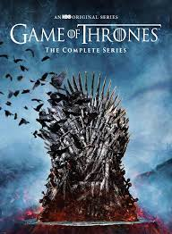
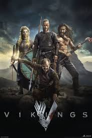
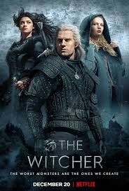
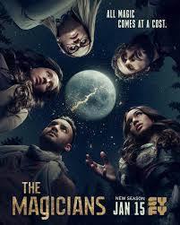

"For the Thrones"

In the mythical continent of Westeros, several powerful families fight for control of the Seven Kingdoms. As conflict erupts in the kingdoms of men, an ancient enemy rises once again to threaten them all. Meanwhile, the last heirs of a recently usurped dynasty plot to take back their homeland from across the Narrow Sea
Genres : Action,Adventure,Drama,Romance
No. of Seasons: 8
Available on Disney+Hotstar
Review: 9.3/10 ⭐
"The Storm Is Coming"

The adventures of a Ragnar Lothbrok: the greatest hero of his age. The series tells the saga of Ragnar's band of Viking brothers and his family as he rises to become King of the Viking tribes. As well as being a fearless warrior, Ragnar embodies the Norse traditions of devotion to the gods: legend has it that he was a direct descendant of Odin, the god of war and warriors.
Genres : Action,Adventure,Drama
No. of Seasons: 6
Available on Netflix
Review: 8.5/10 ⭐
"The worst monsters are the ones that we create."

The Witcher is an American fantasy drama web television series created by Lauren Schmidt Hissrich for Netflix. It is based on the book series of the same name by Polish writer Andrzej Sapkowski. The Witcher follows the story of Geralt of Rivia, a solitary monster hunter, who struggles to find his place in a world where people often prove more wicked than monsters and beasts. But when destiny hurtles him toward a powerful sorceress, and a young princess with a special gift, the three must learn to navigate independently the increasingly volatile Continent.
Genres : Action,Adventure,Drama
No. of Seasons: 1
Available on Netflix
Review: 8.3/10 ⭐
"It's tine to spark a revolution."

After being recruited to a secretive academy, a group of students discover that the magic they read about as children is very real and more dangerous than they ever imagined. But will getting hooked on the thrill of magic distract them from honing their powers when they need them most?
Genres : Mystery,Adventure,Drama
No. of Seasons: 5
Available on Amazon Prime and Netflix
Review: 7.6/10 ⭐